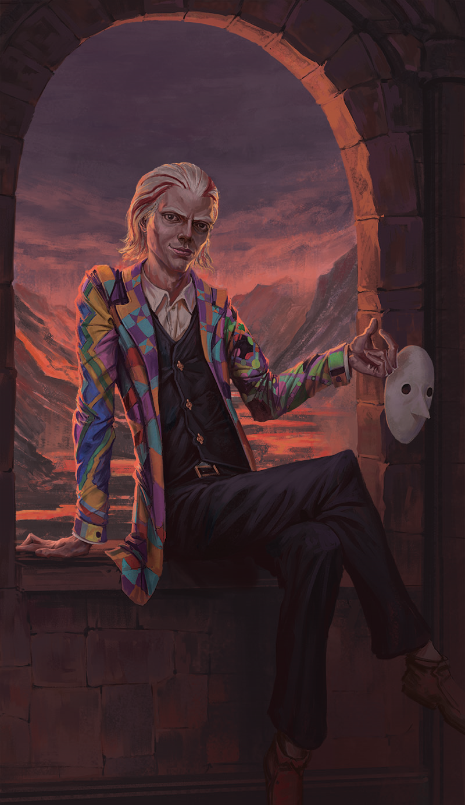

Borel
not 100% clear why the ease transition isn't working. it's fine with the bounce - maybe something about the calculations. Is there a way to smooth it, or do I need to make the increments into 1 degree with javascript?
Will try translate?